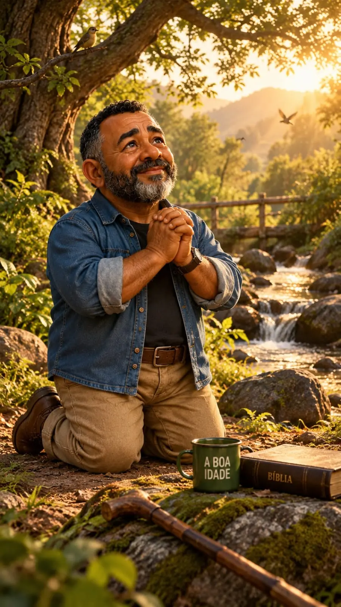

Um café com o Sr. Oliveira

Senhor, por tantas vezes fui porto seguro.
Tentei ser abrigo e proteção,
quem sempre oferecia o ombro amigo,
quem buscava as palavras certas quando a dúvida era a única resposta.
Aprendi a ser forte porque, muitas vezes, era só o que restava.
Há pesos escondidos por trás do sorriso.
Preocupações guardadas no cofre do "tá tudo bem".
E batalhas silenciosas daquele que não podia, NUNCA, fraquejar...
Porque havia gente contando comigo.
Quantas vezes calei o grito para não preocupar quem me buscava.
Quantas vezes escondi o cansaço, respirei fundo e fingi estar tudo bem.
Quantas vezes segui, mesmo com meu corpo pedindo descanso.
Senhor, Vós conheceis aquilo que ninguém vê.
Conheceis o peso do fardo que carrego enquanto sorrio.
As perguntas que faço no silêncio da minha solidão.
Os medos que finjo não ter, e os escondo.
As noites em que o corpo repousa, mas a alma segue atormentada.
Por isso, hoje não venho pedir forças para carregar mais.
Hoje eu apenas me coloco diante de Vós.
Sem armaduras.
Sem respostas.
Sem precisar provar que sou forte.
Porque compreendi, Senhor, que até aquele que oferece colo também precisa ser acolhido.
Então, que o Vosso olhar me encontre.
Que as Vossas mãos poderosas de Pai me acolham.
E permiti que eu deixe aos Vossos pés tudo o que tento carregar sozinho.
Minhas preocupações. Meus medos. Minhas responsabilidades.
As lágrimas que derramo escondidas.
E a dor que nunca consegui dividir com ninguém.
Não Vos peço uma vida sem dificuldades, Senhor.
Peço apenas que, quando minhas forças faltarem, lembre-me de que não estou só.
Que eu tenha a humildade de dividir meu fardo para descansar em Vós.
E sabedoria para compreender que também existe força em dizer:
"Senhor, hoje sou eu quem precisa de colo."
Porque passei tanto tempo tentando ser forte para todos... que adoeci.
E quase me esqueci de que também sou Vosso filho.
E talvez seja por isso que somente hoje, na dor, eu compreendo:
que, antes mesmo de eu erguer minhas mãos para Vos procurar...
as Vossas já estavam estendidas para mim.
Amém.